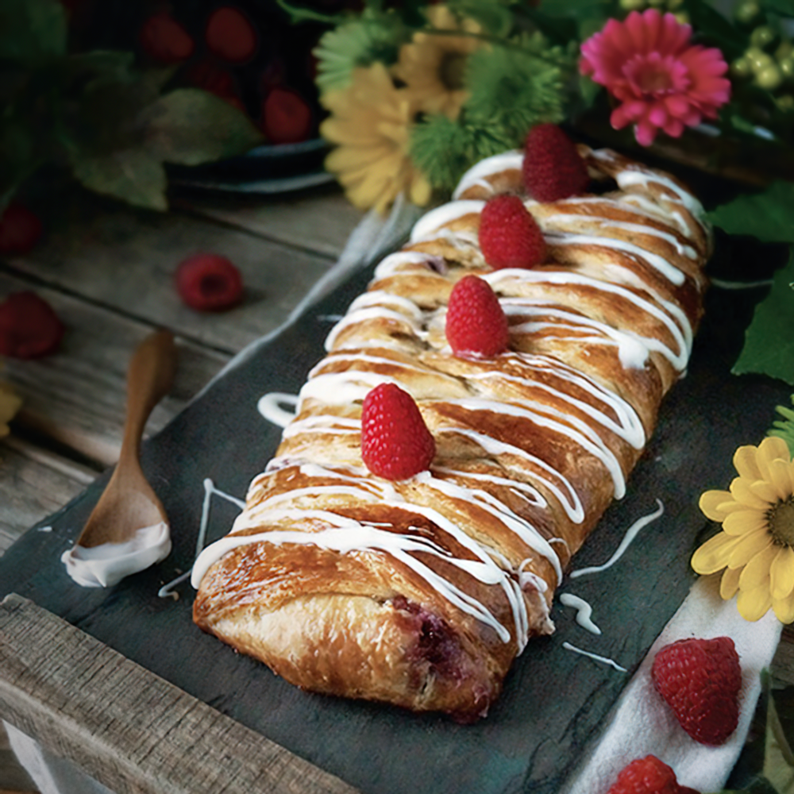

Conjured Mana Strudel

Description
SKILL LEVEL - Master
PREP - 20 minutes
RISING - 1 hour
BAKING - 20 minutes
Not just any mage can conjure up this mana strudel-but with some dedication and time spent on mastering your magical skills,
this delicious high-level treat can be yours.
Ingredients
- 1/2 batch Buttery Pastry Dough
- 1/2 cup cherry or red berry jam
- 4 ounces cream cheese
- 2 tablespoons granulated sugar
- 1/2 teaspoon vanilla
- Egg to glaze
- 1 batch Drizzled Icing and Glaze
- Fresh berries, for garnish (optional)
Steps
- Preheat the oven to 400 F and set aside a large baking sheet
- In a small bowl, mix together the cream cheese, segar, and
Vanilla until smooth.
- batch Battery Pasy Dough (prege 23) 56 cup chersy orri berry for chear 2 tablespoons granulated sugar 5 napowanie Ece to play 1 buch Drizzled Iring and Glaze (page 2) Fresh brmie for gratish (optional)
- Roll out the dough on top of a piece of lightly Boured
parchment paper into a square roughly 14x14 inches, and no thicker than Winch. Carefully spaced the cream cheese mixture in a strip down the middle third of the square covering roughly of the dough and kaving an inch and a half base on cither end. Specad the jam over the cream cheese mixture
- Using a sharp knife, cut out the corners of the dough, lening alizele apar both ends of the filling Slice the sides of the strudel into 1-inch wide stripe Trim ehe sides, if necessary for a straighter linc. Fold both the end flaps op over the filling, then starting on one cod, begin laying the strips diagonally over the filling toward the other side. Alternate sides, always laying the new strip over the previous one. Continue until the whole pastry is bundled up Taking great care. pick up the parchment paper and like it onto the baking sheet Beatoes and brush onto the strudel
- Cover lightly and allow to rise for about 20 minutes, then uncover and place in the oven. Bake at 400°F for about 20 minutes or until the top of the strudel is a nice warm golden color. Remove from oven and allow to cool completely before icing Gamish with fresh barrio, if you like